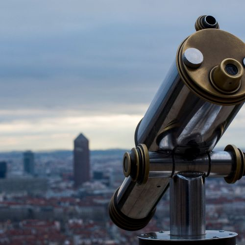
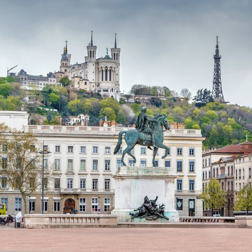

Découvrez les plus beaux monuments de Lyon
Lyon, ville au patrimoine exceptionnel, est un véritable musée à ciel ouvert où chaque monument témoigne d'une époque et d'une histoire uniques. Au cœur de cette métropole dynamique, le Théâtre Antique de Fourvière, datant du Ier siècle après J.-C., se dresse encore comme un témoin impressionnant de l'importance de Lyon sous l'Empire romain. À ses côtés, la Basilique Notre-Dame de Fourvière, édifiée au XIXe siècle dans un style néobyzantin, offre non seulement une vue panoramique sur la ville mais aussi une connexion spirituelle profonde avec son passé.
En flânant dans le Vieux-Lyon, quartier médiéval classé au patrimoine mondial de l'UNESCO, on découvre un enchevêtrement de rues pavées et de traboules, ces passages secrets typiques qui dévoilent l'architecture Renaissance magnifiquement préservée. La Cathédrale Saint-Jean-Baptiste, avec ses sculptures gothiques et ses vitraux colorés, est un exemple remarquable de la grandeur religieuse de l'époque.
Le cœur de la ville se trouve sur la Place Bellecour, l'une des plus vastes places piétonnes d'Europe, ornée d'une imposante statue équestre de Louis XIV. Non loin se dresse le Palais de la Bourse, un édifice néoclassique qui illustre le dynamisme économique du XIXe siècle. Ce monument, aujourd'hui utilisé pour des expositions et conférences, incarne le raffinement et la prospérité de l'époque.
Le Musée des Beaux-Arts de Lyon, installé dans un ancien monastère, est un joyau culturel qui abrite une collection impressionnante allant de l'Antiquité à l'art moderne. Sa richesse est complétée par le Musée des Confluences, dont l'architecture futuriste se distingue nettement du paysage urbain tout en symbolisant l'engagement de Lyon dans le domaine des sciences et des cultures contemporaines.
Enfin, le quartier de Confluence, un ancien site industriel transformé en espace moderne et vibrant, montre comment la ville allie innovation et respect de son héritage. À travers ses monuments historiques et ses réalisations contemporaines, Lyon offre une expérience culturelle unique, où le passé et le présent se rencontrent harmonieusement pour créer une métropole d'une richesse inégalée.
La cathédrale de Fourvière
La Cathédrale de Fourvière, située sur la colline de Fourvière à Lyon, est un monument incontournable pour quiconque visite la ville. Construite entre 1872 et 1884 dans un style néobyzantin, cette cathédrale impressionne par son architecture majestueuse et ses détails artistiques raffinés. Ses mosaïques éclatantes, ses sculptures délicates et ses vitraux colorés captivent les visiteurs et offrent un aperçu unique de l'art religieux du XIXe siècle.
Mais la Cathédrale de Fourvière ne se limite pas à son éclat architectural. Elle est aussi un lieu de dévotion et de spiritualité, offrant une atmosphère de sérénité et de contemplation. De plus, la colline de Fourvière, où se trouve la cathédrale, offre une vue panoramique spectaculaire sur Lyon, permettant aux visiteurs de découvrir la ville sous un angle inédit.
Visiter la Cathédrale de Fourvière, c'est plonger dans l'histoire religieuse et culturelle de Lyon tout en profitant d'une vue imprenable sur la ville, un mélange parfait d'art, d'histoire et de beauté naturelle.


Théâtre Antique de Fourvière
Le Théâtre Antique de Fourvière, joyau de l'héritage romain de Lyon, est un lieu fascinant à découvrir. Construit au Ier siècle après J.-C., ce théâtre pouvait accueillir jusqu'à 3 500 spectateurs et reste l'un des plus anciens témoignages de la grandeur de Lyon sous l'Empire romain. Ses gradins en pierre et sa scène majestueuse, partiellement restaurée, évoquent une époque où la ville était un centre culturel vibrant.
Aujourd'hui, le Théâtre Antique de Fourvière n'est pas seulement un vestige historique ; il accueille encore des spectacles et des festivals, reliant le passé au présent dans un cadre spectaculaire. Assister à un événement ici, c’est vivre une expérience unique, plongée dans l’histoire tout en profitant d’une vue imprenable sur la ville. Ce site exceptionnel vous invite à explorer l'héritage antique de Lyon tout en offrant un cadre magique pour les spectacles modernes. Ne manquez pas l'occasion de découvrir ce monument emblématique qui incarne l'élan culturel de la ville à travers les siècles.
Musée des Beaux-Arts
Le Musée des Beaux-Arts de Lyon, installé dans un ancien monastère bénédictin du XVIIe siècle, est une véritable pépite pour les amateurs d'art. Considéré comme l'un des plus grands musées d'art de France, il abrite une collection impressionnante allant de l'Antiquité à l'art moderne. Avec des chefs-d'œuvre signés par des maîtres tels que Delacroix, Monet et Picasso, ce musée est un voyage à travers les siècles et les styles artistiques.
En visitant le Musée des Beaux-Arts, vous découvrirez des galeries spacieuses et lumineuses qui présentent des sculptures, des peintures et des objets d'art dans un cadre historique fascinant. Les œuvres sont mises en valeur par l'architecture élégante du bâtiment, qui elle-même est une œuvre d'art. Que vous soyez passionné d'histoire de l'art ou simplement curieux, le musée offre une immersion enrichissante dans la richesse artistique et culturelle.
Ne manquez pas l'occasion de flâner dans ses salles majestueuses et de vous laisser inspirer par ses collections exceptionnelles. Le Musée des Beaux-Arts de Lyon est une expérience incontournable qui allie l'éclat du passé artistique avec le charme intemporel de son cadre.

Le vieux Lyon
Le Vieux-Lyon est un quartier captivant où le passé médiéval de la ville se dévoile dans toute sa splendeur. Classé au patrimoine mondial de l'UNESCO, ce quartier historique est un véritable voyage dans le temps avec ses rues pavées, ses maisons à colombages et ses traboules, ces passages secrets qui relient les bâtiments entre eux.
En vous promenant dans le Vieux-Lyon, vous découvrirez des trésors architecturaux tels que la Cathédrale Saint-Jean-Baptiste, dont les vitraux et l’architecture gothique vous émerveilleront. Le quartier est également connu pour ses restaurants traditionnels appelés bouchons, où vous pourrez savourer les délices de la cuisine lyonnaise.
Chaque coin du Vieux-Lyon raconte une histoire, que ce soit à travers ses bâtiments Renaissance magnifiquement préservés ou ses églises historiques. C'est un lieu où l'histoire, l’architecture et la culture se rencontrent, offrant une expérience immersive dans le cœur historique de Lyon. Une visite du Vieux-Lyon est une opportunité unique de plonger dans l'héritage médiéval de la ville tout en profitant de son ambiance vivante et authentique.
Place Bellecour
La Place Bellecour est un cœur vibrant de Lyon et l'une des plus grandes places piétonnes d'Europe. Située au centre de la Presqu'île, elle est le lieu de rencontre incontournable de la ville. Dominée par la majestueuse statue équestre de Louis XIV, cette place offre un spectacle grandiose qui reflète la grandeur historique de Lyon.
En vous promenant sur la Place Bellecour, vous serez impressionné par l'immensité de cet espace ouvert, entouré de boutiques, de cafés et de bâtiments historiques. C’est un lieu idéal pour flâner, faire du shopping ou simplement profiter de l'animation de la ville. La place est également le site de nombreux événements publics et festivals tout au long de l'année, renforçant son rôle en tant que centre névralgique de la vie lyonnaise.
Avec son ambiance dynamique et ses vues imprenables sur les collines environnantes, la Place Bellecour est un lieu incontournable qui capture l’essence de Lyon, alliant histoire et modernité dans un cadre exceptionnel. Ne manquez pas l'occasion de découvrir ce point focal de la ville, symbole de son esprit et de son énergie.
